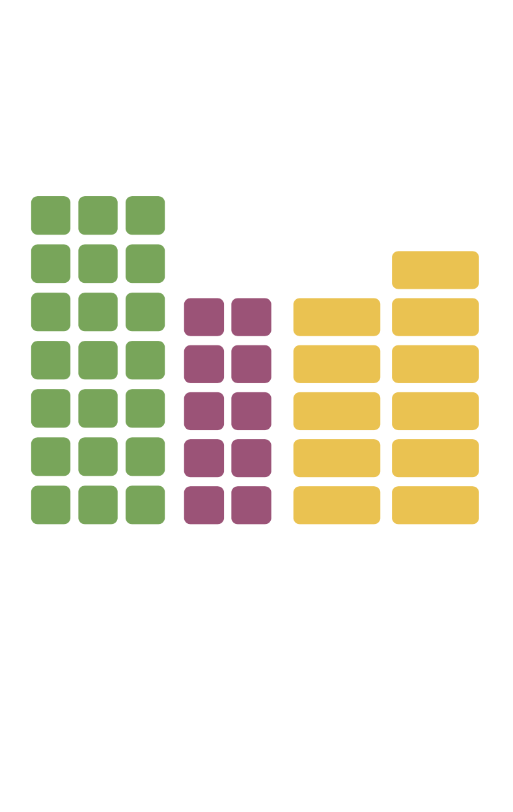

Welcome to my personal website!
I am passionate about Information Visualization, Situated Analytics, Augmented Reality and Deep Learning.
Portfolio

Situated displays of nutritional information
Designing and development of prototype to embed, analyze and interact with augmented nutritional data around dishes. The goal is to provide users with information on how to build a balanced dish in terms of nutrients distribution and portions’ size.
Demo
Exploring Carnivorous Plant Habitats based on Images from Social Media
We visualize species habitat distribution information based on geo-located images posted on social media. For the example of carnivorous plants, we use published image data to produce interactive maps of the spatial distribution of different species/genuses, histograms of the elevations at which they grow, and plots of the temporal distribution of the photographs. We further discuss the mismatch between our distribution maps and traditionally established maps as well as further possibilities for research with our data.